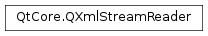

QXmlStreamReader¶
Synopsis¶
Functions¶
- def
addData(data) - def
addData(data) - def
addData(data) - def
addExtraNamespaceDeclaration(extraNamespaceDeclaraction) - def
addExtraNamespaceDeclarations(extraNamespaceDeclaractions) - def
atEnd() - def
attributes() - def
characterOffset() - def
clear() - def
columnNumber() - def
device() - def
documentEncoding() - def
documentVersion() - def
dtdName() - def
dtdPublicId() - def
dtdSystemId() - def
entityDeclarations() - def
entityResolver() - def
error() - def
errorString() - def
hasError() - def
isCDATA() - def
isCharacters() - def
isComment() - def
isDTD() - def
isEndDocument() - def
isEndElement() - def
isEntityReference() - def
isProcessingInstruction() - def
isStandaloneDocument() - def
isStartDocument() - def
isStartElement() - def
isWhitespace() - def
lineNumber() - def
name() - def
namespaceDeclarations() - def
namespaceProcessing() - def
namespaceUri() - def
notationDeclarations() - def
prefix() - def
processingInstructionData() - def
processingInstructionTarget() - def
qualifiedName() - def
raiseError([message=”“]) - def
readElementText([behaviour=ErrorOnUnexpectedElement]) - def
readNext() - def
readNextStartElement() - def
setDevice(device) - def
setEntityResolver(resolver) - def
setNamespaceProcessing(arg__1) - def
skipCurrentElement() - def
text() - def
tokenString() - def
tokenType()
Detailed Description¶
The
PySide2.QtCore.QXmlStreamReaderclass provides a fast parser for reading well-formed XML via a simple streaming API.
PySide2.QtCore.QXmlStreamReaderis a faster and more convenient replacement for Qt’s own SAX parser (seePySide2.QtXml.QXmlSimpleReader). In some cases it might also be a faster and more convenient alternative for use in applications that would otherwise use a DOM tree (seePySide2.QtXml.QDomDocument).PySide2.QtCore.QXmlStreamReaderreads data either from aPySide2.QtCore.QIODevice(seePySide2.QtCore.QXmlStreamReader.setDevice()), or from a rawPySide2.QtCore.QByteArray(seePySide2.QtCore.QXmlStreamReader.addData()).Qt provides
PySide2.QtCore.QXmlStreamWriterfor writing XML.The basic concept of a stream reader is to report an XML document as a stream of tokens, similar to SAX. The main difference between
PySide2.QtCore.QXmlStreamReaderand SAX is how these XML tokens are reported. With SAX, the application must provide handlers (callback functions) that receive so-called XML events from the parser at the parser’s convenience. WithPySide2.QtCore.QXmlStreamReader, the application code itself drives the loop and pulls tokens from the reader, one after another, as it needs them. This is done by callingPySide2.QtCore.QXmlStreamReader.readNext(), where the reader reads from the input stream until it completes the next token, at which point it returns thePySide2.QtCore.QXmlStreamReader.tokenType(). A set of convenient functions includingPySide2.QtCore.QXmlStreamReader.isStartElement()andPySide2.QtCore.QXmlStreamReader.text()can then be used to examine the token to obtain information about what has been read. The big advantage of this pulling approach is the possibility to build recursive descent parsers with it, meaning you can split your XML parsing code easily into different methods or classes. This makes it easy to keep track of the application’s own state when parsing XML.A typical loop with
PySide2.QtCore.QXmlStreamReaderlooks like this:xml = QXmlStreamReader() ... while not xml.atEnd(): xml.readNext(); ... # do processing if xml.hasError(): ... # do error handling
PySide2.QtCore.QXmlStreamReaderis a well-formed XML 1.0 parser that does not include external parsed entities. As long as no error occurs, the application code can thus be assured that the data provided by the stream reader satisfies the W3C’s criteria for well-formed XML. For example, you can be certain that all tags are indeed nested and closed properly, that references to internal entities have been replaced with the correct replacement text, and that attributes have been normalized or added according to the internal subset of the DTD.If an error occurs while parsing,
PySide2.QtCore.QXmlStreamReader.atEnd()andPySide2.QtCore.QXmlStreamReader.hasError()return true, andPySide2.QtCore.QXmlStreamReader.error()returns the error that occurred. The functionsPySide2.QtCore.QXmlStreamReader.errorString(),PySide2.QtCore.QXmlStreamReader.lineNumber(),PySide2.QtCore.QXmlStreamReader.columnNumber(), andPySide2.QtCore.QXmlStreamReader.characterOffset()are for constructing an appropriate error or warning message. To simplify application code,PySide2.QtCore.QXmlStreamReadercontains aPySide2.QtCore.QXmlStreamReader.raiseError()mechanism that lets you raise custom errors that trigger the same error handling described.The QXmlStream Bookmarks Example illustrates how to use the recursive descent technique to read an XML bookmark file (XBEL) with a stream reader.
Namespaces¶
QXmlStream understands and resolves XML namespaces. E.g. in case of a
StartElement,PySide2.QtCore.QXmlStreamReader.namespaceUri()returns the namespace the element is in, andPySide2.QtCore.QXmlStreamReader.name()returns the element’s local name. The combination ofPySide2.QtCore.QXmlStreamReader.namespaceUri()and name uniquely identifies an element. If a namespace prefix was not declared in the XML entities parsed by the reader, thePySide2.QtCore.QXmlStreamReader.namespaceUri()is empty.If you parse XML data that does not utilize namespaces according to the XML specification or doesn’t use namespaces at all, you can use the element’s
PySide2.QtCore.QXmlStreamReader.qualifiedName()instead. A qualified name is the element’sPySide2.QtCore.QXmlStreamReader.prefix()followed by colon followed by the element’s localPySide2.QtCore.QXmlStreamReader.name()- exactly like the element appears in the raw XML data. Since the mappingPySide2.QtCore.QXmlStreamReader.namespaceUri()to prefix is neither unique nor universal,PySide2.QtCore.QXmlStreamReader.qualifiedName()should be avoided for namespace-compliant XML data.In order to parse standalone documents that do use undeclared namespace prefixes, you can turn off namespace processing completely with the
PySide2.QtCore.QXmlStreamReader.namespaceProcessing()property.
Incremental Parsing¶
PySide2.QtCore.QXmlStreamReaderis an incremental parser. It can handle the case where the document can’t be parsed all at once because it arrives in chunks (e.g. from multiple files, or over a network connection). When the reader runs out of data before the complete document has been parsed, it reports aPrematureEndOfDocumentError. When more data arrives, either because of a call toPySide2.QtCore.QXmlStreamReader.addData()or because more data is available through the networkPySide2.QtCore.QXmlStreamReader.device(), the reader recovers from thePrematureEndOfDocumentErrorerror and continues parsing the new data with the next call toPySide2.QtCore.QXmlStreamReader.readNext().For example, if your application reads data from the network using a
network access manager, you would issue anetwork requestto the manager and receive anetwork replyin return. Since aPySide2.QtNetwork.QNetworkReplyis aPySide2.QtCore.QIODevice, you connect itsPySide2.QtCore.QIODevice.readyRead()signal to a custom slot, e.g.slotReadyRead()in the code snippet shown in the discussion forPySide2.QtNetwork.QNetworkAccessManager. In this slot, you read all available data withPySide2.QtCore.QIODevice.readAll()and pass it to the XML stream reader usingPySide2.QtCore.QXmlStreamReader.addData(). Then you call your custom parsing function that reads the XML events from the reader.
Performance and Memory Consumption¶
PySide2.QtCore.QXmlStreamReaderis memory-conservative by design, since it doesn’t store the entire XML document tree in memory, but only the current token at the time it is reported. In addition,PySide2.QtCore.QXmlStreamReaderavoids the many small string allocations that it normally takes to map an XML document to a convenient and Qt-ish API. It does this by reporting all string data asPySide2.QtCore.QStringRefrather than realPySide2.QtCore.QStringobjects.PySide2.QtCore.QStringRefis a thin wrapper aroundPySide2.QtCore.QStringsubstrings that provides a subset of thePySide2.QtCore.QStringAPI without the memory allocation and reference-counting overhead. CallingQStringRef.toString()on any of those objects returns an equivalent realPySide2.QtCore.QStringobject.
-
class
PySide2.QtCore.QXmlStreamReader¶ -
class
PySide2.QtCore.QXmlStreamReader(device) -
class
PySide2.QtCore.QXmlStreamReader(data) -
class
PySide2.QtCore.QXmlStreamReader(data) -
class
PySide2.QtCore.QXmlStreamReader(data) Parameters: - data –
PySide2.QtCore.QByteArray - device –
PySide2.QtCore.QIODevice
Constructs a stream reader.
Creates a new stream reader that reads from
device.Creates a new stream reader that reads from
data.See also
PySide2.QtCore.QXmlStreamReader.addData()PySide2.QtCore.QXmlStreamReader.clear()PySide2.QtCore.QXmlStreamReader.setDevice()Creates a new stream reader that reads from
data.This function should only be used if the XML header either says the encoding is “UTF-8” or lacks any encoding information (the latter is the case of
PySide2.QtCore.QXmlStreamWriterwriting to aPySide2.QtCore.QString). Any other encoding is likely going to cause data corruption (“mojibake”).See also
PySide2.QtCore.QXmlStreamReader.addData()PySide2.QtCore.QXmlStreamReader.clear()PySide2.QtCore.QXmlStreamReader.setDevice()Creates a new stream reader that reads from
data.- data –
-
PySide2.QtCore.QXmlStreamReader.TokenType¶ This enum specifies the type of token the reader just read.
Constant Description QXmlStreamReader.NoToken The reader has not yet read anything. QXmlStreamReader.Invalid An error has occurred, reported in PySide2.QtCore.QXmlStreamReader.error()andPySide2.QtCore.QXmlStreamReader.errorString().QXmlStreamReader.StartDocument The reader reports the XML version number in PySide2.QtCore.QXmlStreamReader.documentVersion(), and the encoding as specified in the XML document inPySide2.QtCore.QXmlStreamReader.documentEncoding(). If the document is declared standalone,PySide2.QtCore.QXmlStreamReader.isStandaloneDocument()returnstrue; otherwise it returnsfalse.QXmlStreamReader.EndDocument The reader reports the end of the document. QXmlStreamReader.StartElement The reader reports the start of an element with PySide2.QtCore.QXmlStreamReader.namespaceUri()andPySide2.QtCore.QXmlStreamReader.name(). Empty elements are also reported as , followed directly by . The convenience functionPySide2.QtCore.QXmlStreamReader.readElementText()can be called to concatenate all content until the corresponding . Attributes are reported inPySide2.QtCore.QXmlStreamReader.attributes(), namespace declarations inPySide2.QtCore.QXmlStreamReader.namespaceDeclarations().QXmlStreamReader.EndElement The reader reports the end of an element with PySide2.QtCore.QXmlStreamReader.namespaceUri()andPySide2.QtCore.QXmlStreamReader.name().QXmlStreamReader.Characters The reader reports characters in PySide2.QtCore.QXmlStreamReader.text(). If the characters are all white-space,PySide2.QtCore.QXmlStreamReader.isWhitespace()returnstrue. If the characters stem from a CDATA section,PySide2.QtCore.QXmlStreamReader.isCDATA()returnstrue.QXmlStreamReader.Comment The reader reports a comment in PySide2.QtCore.QXmlStreamReader.text().QXmlStreamReader.DTD The reader reports a DTD in PySide2.QtCore.QXmlStreamReader.text(), notation declarations inPySide2.QtCore.QXmlStreamReader.notationDeclarations(), and entity declarations inPySide2.QtCore.QXmlStreamReader.entityDeclarations(). Details of the DTD declaration are reported in inPySide2.QtCore.QXmlStreamReader.dtdName(),PySide2.QtCore.QXmlStreamReader.dtdPublicId(), andPySide2.QtCore.QXmlStreamReader.dtdSystemId().QXmlStreamReader.EntityReference The reader reports an entity reference that could not be resolved. The name of the reference is reported in PySide2.QtCore.QXmlStreamReader.name(), the replacement text inPySide2.QtCore.QXmlStreamReader.text().QXmlStreamReader.ProcessingInstruction The reader reports a processing instruction in PySide2.QtCore.QXmlStreamReader.processingInstructionTarget()andPySide2.QtCore.QXmlStreamReader.processingInstructionData().
-
PySide2.QtCore.QXmlStreamReader.ReadElementTextBehaviour¶ This enum specifies the different behaviours of
PySide2.QtCore.QXmlStreamReader.readElementText().Constant Description QXmlStreamReader.ErrorOnUnexpectedElement Raise an UnexpectedElementErrorand return what was read so far when a child element is encountered.QXmlStreamReader.IncludeChildElements Recursively include the text from child elements. QXmlStreamReader.SkipChildElements Skip child elements.
Note
This enum was introduced in Qt 4.6.
-
PySide2.QtCore.QXmlStreamReader.Error¶ This enum specifies different error cases
Constant Description QXmlStreamReader.NoError No error has occurred. QXmlStreamReader.CustomError A custom error has been raised with PySide2.QtCore.QXmlStreamReader.raiseError()QXmlStreamReader.NotWellFormedError The parser internally raised an error due to the read XML not being well-formed. QXmlStreamReader.PrematureEndOfDocumentError The input stream ended before a well-formed XML document was parsed. Recovery from this error is possible if more XML arrives in the stream, either by calling PySide2.QtCore.QXmlStreamReader.addData()or by waiting for it to arrive on thePySide2.QtCore.QXmlStreamReader.device().QXmlStreamReader.UnexpectedElementError The parser encountered an element that was different to those it expected.
-
PySide2.QtCore.QXmlStreamReader.addData(data)¶ Parameters: data – str Adds more
datafor the reader to read. This function does nothing if the reader has aPySide2.QtCore.QXmlStreamReader.device().
-
PySide2.QtCore.QXmlStreamReader.addData(data) Parameters: data – unicode Adds more
datafor the reader to read. This function does nothing if the reader has aPySide2.QtCore.QXmlStreamReader.device().
-
PySide2.QtCore.QXmlStreamReader.addData(data) Parameters: data – PySide2.QtCore.QByteArrayAdds more
datafor the reader to read. This function does nothing if the reader has aPySide2.QtCore.QXmlStreamReader.device().
-
PySide2.QtCore.QXmlStreamReader.addExtraNamespaceDeclaration(extraNamespaceDeclaraction)¶ Parameters: extraNamespaceDeclaraction – PySide2.QtCore.QXmlStreamNamespaceDeclarationAdds an
extraNamespaceDeclaration. The declaration will be valid for children of the current element, or - should the function be called before any elements are read - for the entire XML document.
-
PySide2.QtCore.QXmlStreamReader.addExtraNamespaceDeclarations(extraNamespaceDeclaractions)¶ Parameters: extraNamespaceDeclaractions – Adds a vector of declarations specified by
extraNamespaceDeclarations.
-
PySide2.QtCore.QXmlStreamReader.atEnd()¶ Return type: PySide2.QtCore.boolReturns
trueif the reader has read until the end of the XML document, or if anPySide2.QtCore.QXmlStreamReader.error()has occurred and reading has been aborted. Otherwise, it returnsfalse.When and
PySide2.QtCore.QXmlStreamReader.hasError()return true andPySide2.QtCore.QXmlStreamReader.error()returnsPrematureEndOfDocumentError, it means the XML has been well-formed so far, but a complete XML document has not been parsed. The next chunk of XML can be added withPySide2.QtCore.QXmlStreamReader.addData(), if the XML is being read from aPySide2.QtCore.QByteArray, or by waiting for more data to arrive if the XML is being read from aPySide2.QtCore.QIODevice. Either way, will return false once more data is available.
-
PySide2.QtCore.QXmlStreamReader.attributes()¶ Return type: PySide2.QtCore.QXmlStreamAttributesReturns the attributes of a
StartElement.
-
PySide2.QtCore.QXmlStreamReader.characterOffset()¶ Return type: PySide2.QtCore.qint64Returns the current character offset, starting with 0.
-
PySide2.QtCore.QXmlStreamReader.clear()¶ Removes any
PySide2.QtCore.QXmlStreamReader.device()or data from the reader and resets its internal state to the initial state.
-
PySide2.QtCore.QXmlStreamReader.columnNumber()¶ Return type: PySide2.QtCore.qint64Returns the current column number, starting with 0.
-
PySide2.QtCore.QXmlStreamReader.device()¶ Return type: PySide2.QtCore.QIODeviceReturns the current device associated with the
PySide2.QtCore.QXmlStreamReader, or 0 if no device has been assigned.
-
PySide2.QtCore.QXmlStreamReader.documentEncoding()¶ Return type: PySide2.QtCore.QStringRefIf the
PySide2.QtCore.QXmlStreamReader.tokenType()isStartDocument, this function returns the encoding string as specified in the XML declaration. Otherwise an empty string is returned.
-
PySide2.QtCore.QXmlStreamReader.documentVersion()¶ Return type: PySide2.QtCore.QStringRefIf the
PySide2.QtCore.QXmlStreamReader.tokenType()isStartDocument, this function returns the version string as specified in the XML declaration. Otherwise an empty string is returned.
-
PySide2.QtCore.QXmlStreamReader.dtdName()¶ Return type: PySide2.QtCore.QStringRefIf the
PySide2.QtCore.QXmlStreamReader.tokenType()isDTD, this function returns the DTD’s name. Otherwise an empty string is returned.
-
PySide2.QtCore.QXmlStreamReader.dtdPublicId()¶ Return type: PySide2.QtCore.QStringRefIf the
PySide2.QtCore.QXmlStreamReader.tokenType()isDTD, this function returns the DTD’s public identifier. Otherwise an empty string is returned.
-
PySide2.QtCore.QXmlStreamReader.dtdSystemId()¶ Return type: PySide2.QtCore.QStringRefIf the
PySide2.QtCore.QXmlStreamReader.tokenType()isDTD, this function returns the DTD’s system identifier. Otherwise an empty string is returned.
-
PySide2.QtCore.QXmlStreamReader.entityDeclarations()¶ Return type: If the
PySide2.QtCore.QXmlStreamReader.tokenType()isDTD, this function returns the DTD’s unparsed (external) entity declarations. Otherwise an empty vector is returned.The
QXmlStreamEntityDeclarationsclass is defined to be aQVectorofPySide2.QtCore.QXmlStreamEntityDeclaration.
-
PySide2.QtCore.QXmlStreamReader.entityResolver()¶ Return type: PySide2.QtCore.QXmlStreamEntityResolverReturns the entity resolver, or 0 if there is no entity resolver.
-
PySide2.QtCore.QXmlStreamReader.error()¶ Return type: PySide2.QtCore.QXmlStreamReader.ErrorReturns the type of the current error, or
NoErrorif no error occurred.
-
PySide2.QtCore.QXmlStreamReader.errorString()¶ Return type: unicode Returns the error message that was set with
PySide2.QtCore.QXmlStreamReader.raiseError().
-
PySide2.QtCore.QXmlStreamReader.hasError()¶ Return type: PySide2.QtCore.boolReturns
trueif an error has occurred, otherwisefalse.
-
PySide2.QtCore.QXmlStreamReader.isCDATA()¶ Return type: PySide2.QtCore.boolReturns
trueif the reader reports characters that stem from a CDATA section; otherwise returnsfalse.
-
PySide2.QtCore.QXmlStreamReader.isCharacters()¶ Return type: PySide2.QtCore.boolReturns
trueifPySide2.QtCore.QXmlStreamReader.tokenType()equalsCharacters; otherwise returnsfalse.
-
PySide2.QtCore.QXmlStreamReader.isComment()¶ Return type: PySide2.QtCore.boolReturns
trueifPySide2.QtCore.QXmlStreamReader.tokenType()equalsComment; otherwise returnsfalse.
-
PySide2.QtCore.QXmlStreamReader.isDTD()¶ Return type: PySide2.QtCore.boolReturns
trueifPySide2.QtCore.QXmlStreamReader.tokenType()equalsDTD; otherwise returnsfalse.
-
PySide2.QtCore.QXmlStreamReader.isEndDocument()¶ Return type: PySide2.QtCore.boolReturns
trueifPySide2.QtCore.QXmlStreamReader.tokenType()equalsEndDocument; otherwise returnsfalse.
-
PySide2.QtCore.QXmlStreamReader.isEndElement()¶ Return type: PySide2.QtCore.boolReturns
trueifPySide2.QtCore.QXmlStreamReader.tokenType()equalsEndElement; otherwise returnsfalse.
-
PySide2.QtCore.QXmlStreamReader.isEntityReference()¶ Return type: PySide2.QtCore.boolReturns
trueifPySide2.QtCore.QXmlStreamReader.tokenType()equalsEntityReference; otherwise returnsfalse.
-
PySide2.QtCore.QXmlStreamReader.isProcessingInstruction()¶ Return type: PySide2.QtCore.boolReturns
trueifPySide2.QtCore.QXmlStreamReader.tokenType()equalsProcessingInstruction; otherwise returnsfalse.
-
PySide2.QtCore.QXmlStreamReader.isStandaloneDocument()¶ Return type: PySide2.QtCore.boolReturns
trueif this document has been declared standalone in the XML declaration; otherwise returnsfalse.If no XML declaration has been parsed, this function returns
false.
-
PySide2.QtCore.QXmlStreamReader.isStartDocument()¶ Return type: PySide2.QtCore.boolReturns
trueifPySide2.QtCore.QXmlStreamReader.tokenType()equalsStartDocument; otherwise returnsfalse.
-
PySide2.QtCore.QXmlStreamReader.isStartElement()¶ Return type: PySide2.QtCore.boolReturns
trueifPySide2.QtCore.QXmlStreamReader.tokenType()equalsStartElement; otherwise returnsfalse.
-
PySide2.QtCore.QXmlStreamReader.isWhitespace()¶ Return type: PySide2.QtCore.boolReturns
trueif the reader reports characters that only consist of white-space; otherwise returnsfalse.
-
PySide2.QtCore.QXmlStreamReader.lineNumber()¶ Return type: PySide2.QtCore.qint64Returns the current line number, starting with 1.
-
PySide2.QtCore.QXmlStreamReader.name()¶ Return type: PySide2.QtCore.QStringRefReturns the local name of a
StartElement,EndElement, or anEntityReference.
-
PySide2.QtCore.QXmlStreamReader.namespaceDeclarations()¶ Return type: If the
PySide2.QtCore.QXmlStreamReader.tokenType()isStartElement, this function returns the element’s namespace declarations. Otherwise an empty vector is returned.The
QXmlStreamNamespaceDeclarationsclass is defined to be aQVectorofPySide2.QtCore.QXmlStreamNamespaceDeclaration.
-
PySide2.QtCore.QXmlStreamReader.namespaceProcessing()¶ Return type: PySide2.QtCore.bool
-
PySide2.QtCore.QXmlStreamReader.namespaceUri()¶ Return type: PySide2.QtCore.QStringRefReturns the of a
StartElementorEndElement.
-
PySide2.QtCore.QXmlStreamReader.notationDeclarations()¶ Return type: If the
PySide2.QtCore.QXmlStreamReader.tokenType()isDTD, this function returns the DTD’s notation declarations. Otherwise an empty vector is returned.The
QXmlStreamNotationDeclarationsclass is defined to be aQVectorofPySide2.QtCore.QXmlStreamNotationDeclaration.
-
PySide2.QtCore.QXmlStreamReader.prefix()¶ Return type: PySide2.QtCore.QStringRefReturns the prefix of a
StartElementorEndElement.
-
PySide2.QtCore.QXmlStreamReader.processingInstructionData()¶ Return type: PySide2.QtCore.QStringRefReturns the data of a
ProcessingInstruction.
-
PySide2.QtCore.QXmlStreamReader.processingInstructionTarget()¶ Return type: PySide2.QtCore.QStringRefReturns the target of a
ProcessingInstruction.
-
PySide2.QtCore.QXmlStreamReader.qualifiedName()¶ Return type: PySide2.QtCore.QStringRefReturns the qualified name of a
StartElementorEndElement;A qualified name is the raw name of an element in the XML data. It consists of the namespace prefix, followed by colon, followed by the element’s local name. Since the namespace prefix is not unique (the same prefix can point to different namespaces and different prefixes can point to the same namespace), you shouldn’t use , but the resolved
PySide2.QtCore.QXmlStreamReader.namespaceUri()and the attribute’s localPySide2.QtCore.QXmlStreamReader.name().
-
PySide2.QtCore.QXmlStreamReader.raiseError([message=""])¶ Parameters: message – unicode Raises a custom error with an optional error
message.
-
PySide2.QtCore.QXmlStreamReader.readElementText([behaviour=ErrorOnUnexpectedElement])¶ Parameters: behaviour – PySide2.QtCore.QXmlStreamReader.ReadElementTextBehaviourReturn type: unicode Convenience function to be called in case a
StartElementwas read. Reads until the correspondingEndElementand returns all text in-between. In case of no error, the current token (seePySide2.QtCore.QXmlStreamReader.tokenType()) after having called this function isEndElement.The function concatenates
PySide2.QtCore.QXmlStreamReader.text()when it reads eitherCharactersorEntityReferencetokens, but skipsProcessingInstructionandComment. If the current token is notStartElement, an empty string is returned.The
behaviourdefines what happens in case anything else is read before reachingEndElement. The function can include the text from child elements (useful for example for HTML), ignore child elements, or raise anUnexpectedElementErrorand return what was read so far (default).
-
PySide2.QtCore.QXmlStreamReader.readNext()¶ Return type: PySide2.QtCore.QXmlStreamReader.TokenTypeReads the next token and returns its type.
With one exception, once an
PySide2.QtCore.QXmlStreamReader.error()is reported by , further reading of the XML stream is not possible. ThenPySide2.QtCore.QXmlStreamReader.atEnd()returnstrue,PySide2.QtCore.QXmlStreamReader.hasError()returnstrue, and this function returnsQXmlStreamReader.Invalid.The exception is when
PySide2.QtCore.QXmlStreamReader.error()returnsPrematureEndOfDocumentError. This error is reported when the end of an otherwise well-formed chunk of XML is reached, but the chunk doesn’t represent a complete XML document. In that case, parsing can be resumed by callingPySide2.QtCore.QXmlStreamReader.addData()to add the next chunk of XML, when the stream is being read from aPySide2.QtCore.QByteArray, or by waiting for more data to arrive when the stream is being read from aPySide2.QtCore.QXmlStreamReader.device().
-
PySide2.QtCore.QXmlStreamReader.readNextStartElement()¶ Return type: PySide2.QtCore.boolReads until the next start element within the current element. Returns
truewhen a start element was reached. When the end element was reached, or when an error occurred, false is returned.The current element is the element matching the most recently parsed start element of which a matching end element has not yet been reached. When the parser has reached the end element, the current element becomes the parent element.
This is a convenience function for when you’re only concerned with parsing XML elements. The QXmlStream Bookmarks Example makes extensive use of this function.
-
PySide2.QtCore.QXmlStreamReader.setDevice(device)¶ Parameters: device – PySide2.QtCore.QIODeviceSets the current device to
device. Setting the device resets the stream to its initial state.
-
PySide2.QtCore.QXmlStreamReader.setEntityResolver(resolver)¶ Parameters: resolver – PySide2.QtCore.QXmlStreamEntityResolverMakes
resolverthe newPySide2.QtCore.QXmlStreamReader.entityResolver().The stream reader does not take ownership of the resolver. It’s the callers responsibility to ensure that the resolver is valid during the entire life-time of the stream reader object, or until another resolver or 0 is set.
-
PySide2.QtCore.QXmlStreamReader.setNamespaceProcessing(arg__1)¶ Parameters: arg__1 – PySide2.QtCore.bool
-
PySide2.QtCore.QXmlStreamReader.skipCurrentElement()¶ Reads until the end of the current element, skipping any child nodes. This function is useful for skipping unknown elements.
The current element is the element matching the most recently parsed start element of which a matching end element has not yet been reached. When the parser has reached the end element, the current element becomes the parent element.
-
PySide2.QtCore.QXmlStreamReader.text()¶ Return type: PySide2.QtCore.QStringRefReturns the text of
Characters,Comment,DTD, orEntityReference.
-
PySide2.QtCore.QXmlStreamReader.tokenString()¶ Return type: unicode Returns the reader’s current token as string.
-
PySide2.QtCore.QXmlStreamReader.tokenType()¶ Return type: PySide2.QtCore.QXmlStreamReader.TokenTypeReturns the type of the current token.
The current token can also be queried with the convenience functions
PySide2.QtCore.QXmlStreamReader.isStartDocument(),PySide2.QtCore.QXmlStreamReader.isEndDocument(),PySide2.QtCore.QXmlStreamReader.isStartElement(),PySide2.QtCore.QXmlStreamReader.isEndElement(),PySide2.QtCore.QXmlStreamReader.isCharacters(),PySide2.QtCore.QXmlStreamReader.isComment(),PySide2.QtCore.QXmlStreamReader.isDTD(),PySide2.QtCore.QXmlStreamReader.isEntityReference(), andPySide2.QtCore.QXmlStreamReader.isProcessingInstruction().
© 2018 The Qt Company Ltd. Documentation contributions included herein are the copyrights of their respective owners. The documentation provided herein is licensed under the terms of the GNU Free Documentation License version 1.3 as published by the Free Software Foundation. Qt and respective logos are trademarks of The Qt Company Ltd. in Finland and/or other countries worldwide. All other trademarks are property of their respective owners.